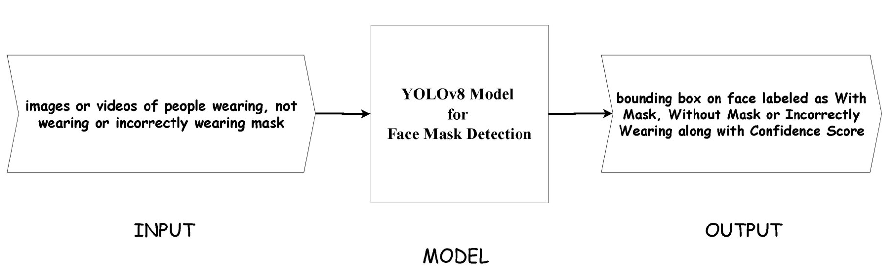
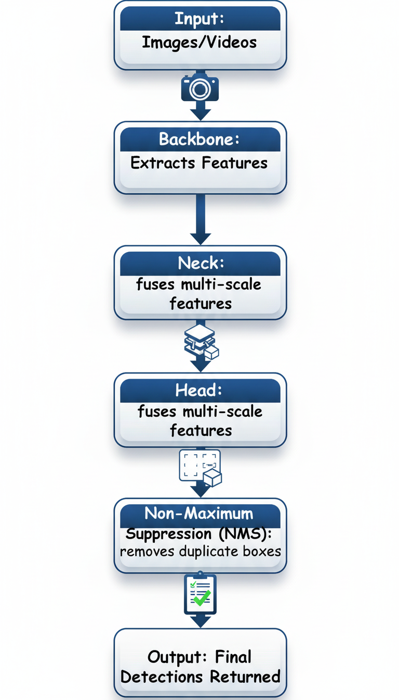
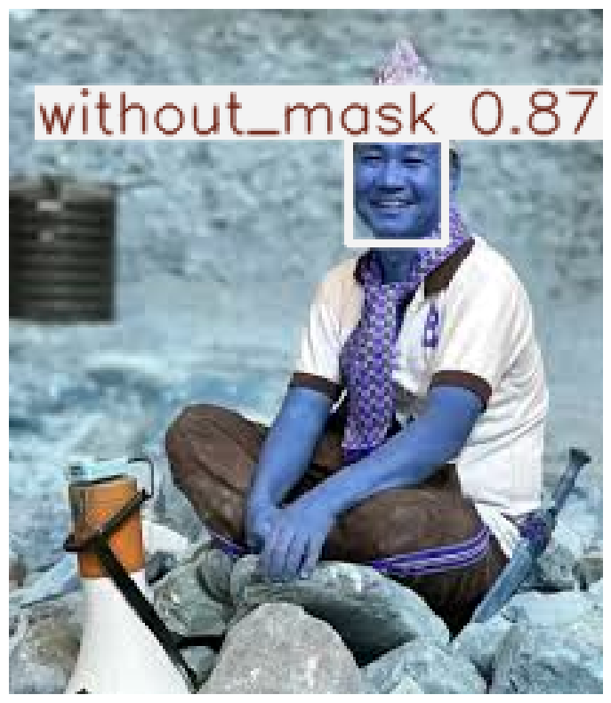
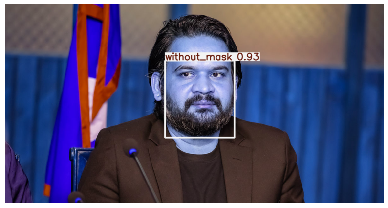
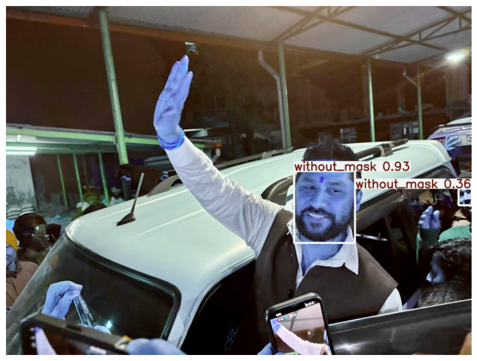
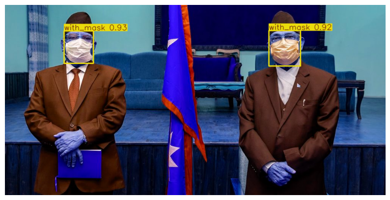
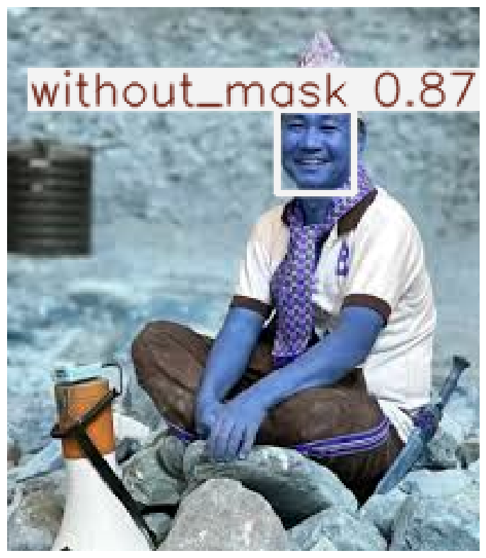
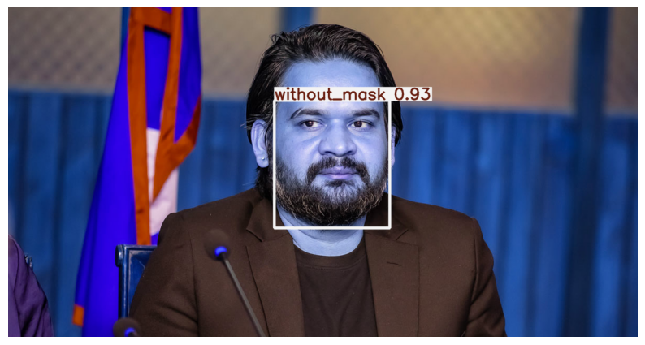
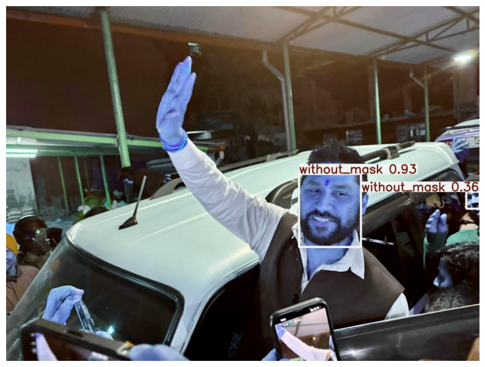
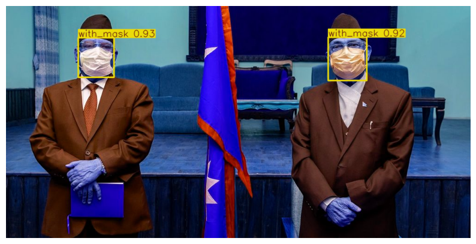

Face Mask Detection System
Real-Time Detection using YOLOv8 Deep Learning Algorithm
Introduction
A Face Mask Detection System using YOLOv8 is a computer vision–based application designed to automatically detect whether a person is wearing a face mask or not in images and video streams. The system classifies faces into Mask, No Mask, and Incorrectly Wearing categories in real time, enabling fast and reliable monitoring for public health and safety compliance.
Objectives
- Build a real-time face mask detection system using YOLOv8
- Classify faces into Mask, No Mask, and Incorrectly Wearing
- Achieve high accuracy with low inference time
- Deploy a model suitable for real-world environments
Scope
- Detects multiple faces in a single image or video frame
- Works with images, video files, and live camera feeds
- Can be integrated with CCTV and surveillance systems
- Extendable to other safety equipment detection
Methodology
System Block Diagram
Algorithm Used: YOLOv8
YOLOv8 (You Only Look Once – Version 8) is a real-time computer vision algorithm developed by Ultralytics. It follows a single-stage detector philosophy, performing object detection in one forward pass, resulting in high speed and accuracy.
Working Architecture of YOLOv8
YOLOv8 Architecture
- Backbone: Extracts important visual features
- Neck: Aggregates features at multiple scales
- Head: Predicts bounding boxes and class labels
Output
- Detected faces displayed with bounding boxes
- Labels: With Mask, Without Mask, Incorrectly Wearing
- Confidence score shown for each detection
- Works efficiently on real-time video streams
Sample Detection Output
 






